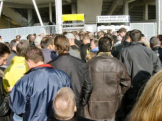
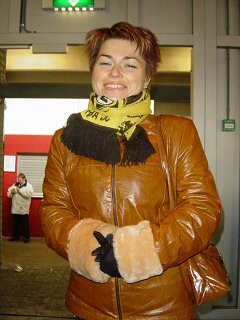

|
Roda JC - Feyenoord (1-1) 19 oktober 2003 |

Lange wachtrijen vergen.....

.... X bloed, zweet en hanen X !
De sfeermakers op west.
En de sfeermakers op zuid.
Al na 3 minuten scoort Kuijt met een genadeloos
hard schot op aangeven van Van Persie (corner).
Feest in het volle uitvak (1000 supporters).
Topoverleg bij een vrijetrap.
Luijpers raakte geblesseerd, strompelde na deze
behandeling nog even doelloos over het veld en
werd toen eindelijk vervangen door Sergio.
De voorzet van Kone bereikt Sonko net niet. In
het tweede gedeelte van de eerste helft speelde
Roda mooi aanvallend voetbal.
Sergio knalt dan ook de gelijkmaker binnen (34').
Brazil, jalalalalalaaaaa....
Filipovic checkt de conditie van Schreuders nek.
In de rommelige tweede helft kreeg Feyenoord
twee superkansen. Dit is de eerste misser.
Ook hier komt Roda met de schrik vrij.
De cooling down van de spelers.
De cooling down van de supporters.

Hey! De vriendin van Freek Cox 10!
Tot slot nog een pintje in Lazerus.
Meer foto's op Feyenoord Foto Page